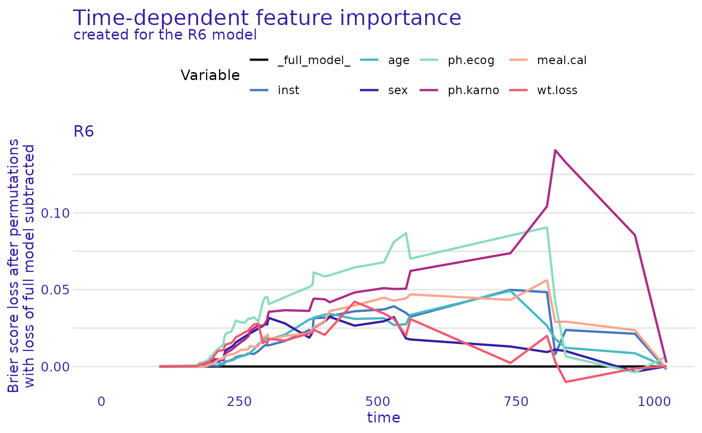
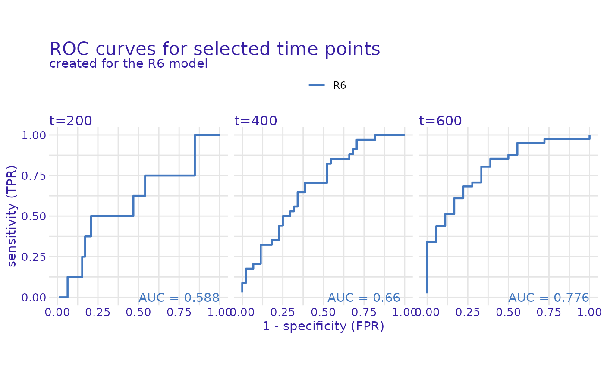
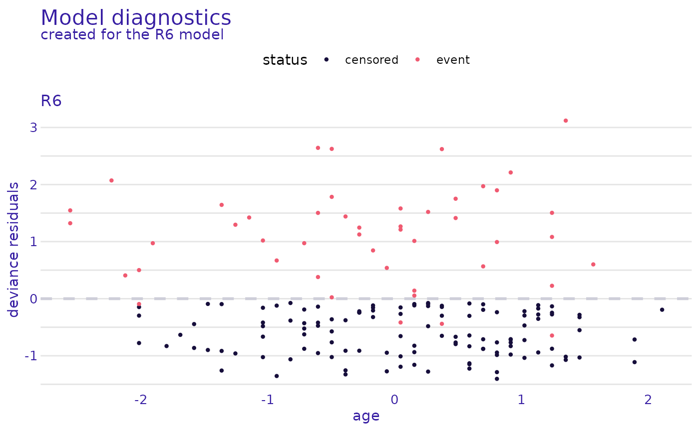

Integrating a DeepSuRv Model with survex Counterfactuals
Source:vignettes/deepsurv_survex.Rmd
deepsurv_survex.RmdSetup
Before proceeding with the workflow, users should load the following libraries:
-
DeepSuRvfor deep learning modeling -
torchfor creating the tensor objects that support the DeepSuRv model -
survivalfor the example datasets -
survexfor the counterfactual explanation infrastructure
Lung Data from survival Package
We demonstrate how to train a basic DeepSuRv model and create a
counterfactual explanation using the lung dataset from the
survival package.
Preparing the data
We preprocess the data to create a design matrix using
prep_data() and ensure the status column is properly
encoded for event occurrence (1 for event, 0 for censoring). This step
is critical because incorrect encoding can lead to invalid model
training.
Create Torch Tensors for Training
We covert the data to torch tensors, which are required
for DeepSuRv model training. The DeepSuRv model only accepts
torch tensors as input, so do not skip this step!
Converting the data to tensors allows the neural network to efficiently
perform gradient-based optimization. We also order the data by
descending survival time to maintain consistency with standard survival
analysis methods.
train_data <- list(
x = torch_tensor(as.matrix(X), dtype = torch_float()),
time = torch_tensor(dat$time, dtype = torch_float()),
event = torch_tensor(dat$status, dtype = torch_float())
)
# Order by descending time
order_idx <- order(as.numeric(train_data$time), decreasing = TRUE)
train_data$x <- train_data$x[order_idx, ]
train_data$time <- train_data$time[order_idx]
train_data$event <- train_data$event[order_idx]Initialize and Standardize the Model
We define a basic standardized model with one hidden layer. Standardization is not necessary but it is the default option in our repository and the original Python implementation. Standardization ensures all input features are on the same scale, which helps the neural network converge more efficiently and prevents certain features from dominating the learning process.
Train the Model
We now train the model using the prepared tensors. During training, the network learns the relationship between the input features and the survival outcomes. More on model training in INSERT NAME OF DEEPSURV CLASS TUTORIAL ARTICLE.
model$train(
X_train = train_data$x,
t_train = train_data$time,
e_train = train_data$event
)
#> Epoch: 10 Loss: 191.9033
#> Epoch: 20 Loss: 188.818
#> Epoch: 30 Loss: 185.9341
#> Epoch: 40 Loss: 183.497
#> Epoch: 50 Loss: 181.3073Make Predictions
After training, we can predict risk scores for each patient. These risk scores indicate the relative hazard, with higher scores corresponding to a higher risk of the event of interest occurring sooner.
risk_scores <- model$predict_risk(X)
head(risk_scores)
#> [1] -0.3494549 0.8338006 -1.8548696 1.2236645 0.5271077 0.5462369Creating an Explainer
To interpret the model, we use survex to create an
explainer object. This step allows us to understand the contribution of
each feature to the predicted risk and sets up the counterfactual
analysis that follows.
explainer <- make_deepsurv_explainer(model, dat, 'time', 'status')
#> Preparation of a new explainer is initiated
#> -> model label : R6 ( default )
#> -> data : 167 rows 8 cols
#> -> target variable : 167 values ( 47 events and 120 censored )
#> -> times : 45 unique time points , min = 105 , max = 1022
#> -> predict function : predict_fun
#> -> predict survival function : predict_survival_fun
#> -> predict cumulative hazard function : -log(predict_survival_function) will be used ( default )
#> -> model_info : package unrecognized , model of class: DeepSuRv , ver. unknown , task survival ( default )
#> -> model_info : type set to risk
#> A new explainer has been created!Model Profiling
We can examine how specific variables influence survival with
survex. This provides insight into which features are most
important for the model’s predictions.
survex::model_profile() generates three main outputs.
$eval_times lists the time points the survival predictions
are evaluated at. cp_profiles shows the modified covariate
values used in each scenario with the selected variables (age and sex)
varied and all other variables held fixed. The profiled predictions
table links these scenarios to the predicted survival probabilities over
time, with columns _times_ for the time point,
_yhat_ for the predicted survival, and _vname_
indicating which variable was varied. Interpreting this output allows
you to see how individual variables influence survival predictions over
time. The other output features are dependent upon the function
arguments that the user specifies. We have hidden the output due to its
large size.
Feature Importance Plot
survex::model_parts() computes permutation-based
variable importance for survival models. Given a survival model wrapped
in an explainer object, it measures how much each feature
contributes to the model’s predictive performance by randomly permuting
that feature and comparing the resulting predictions to the baseline.
Features that cause a large drop in performance when permuted are deemed
more important. The function works with the full survival predictions
and uses a loss function (default is the Brier score) to quantify
performance changes. The Brier score is a scoring rule ranging from 0
(perfect accuracy) to 1 (perfect inaccuracy) that measures the accuracy
of a predicted survival function. The output can be inspected as a table
or visualized with plot(), providing a global view of which variables
most influence the model’s survival predictions. As seen in the plot
below, the ph.karno variable was the most important
covariate (according to the Brier score metric) for creating the model’s
predictions.
plot(model_parts(explainer))
Visualizing variable importance helps communicate which factors the
model relies on most. This has previously been a weakness of neural
network models, which are often praised for their efficiency in
obtaining results but have a concerning weakness with their
interpretability. By combining DeepSuRv’s predictive efficiency with the
explanatory power of survex, we can now gain more
understanding of what is going on under the hood of black box models
like feed- forward neural networks.
Model Performance
survex::model_performance() evaluates how well a
survival model predicts outcomes by computing a set of standard
performance metrics tailored to survival analysis (if argument
type = "metrics" is specified; default). Given an
explainer object, it calculates measures such as Harrell’s
concordance index (C-index), time‑dependent C/D AUC, Brier score, and
their integrated (overall) versions, which quantify different aspects of
prediction quality over time. It can also produce ROC curves at
specified time points when requested (if argument
(type = "roc" is specified). These metrics help assess and
compare the predictive ability of survival models in a meaningful way,
going beyond a simple single summary to account for time‑to‑event
structure and censoring in the data. By using plot() on the returned
object users can visualize how the model performs across time or compare
models graphically.
deepsurv_mp <- model_performance(explainer, type = "roc", times = c(200, 400, 600))
plot(deepsurv_mp)
Model Diagnostics
survex::model_diagnostics() provides diagnostic checks
for survival models by computing standard residuals that help users
evaluate how well a model fits their data. When users pass an explainer
object to this function, it calculates residuals such as martingale
residuals and deviance residuals, which summarize differences between
observed outcomes and model predictions. For example, these residuals
can describe whether events occurred earlier or later than expected
under the model. These residuals can reveal systematic patterns or lack
of fit (e.g., model misspecification, nonlinearity, or influential
observations), which supports model assessment in addition to overall
performance metrics like C-indices or Brier scores. The output can be
examined numerically and visualized (e.g., plotting residuals against
covariates or cumulative hazard) to help diagnose issues and guide model
improvement. We have hidden the residual dataframe output due to its
large size.
res <- model_diagnostics(explainer)
plot(res, plot_type = "martingale")
plot(res, xvariable = "age")
#> `geom_smooth()` using method = 'loess' and formula = 'y ~ x'
General Note
Once users create the explainer object in
survex, they can use their explainer object as
input for any survex function. The explainer
object is essentially how a user makes their DeepSuRv model
interpretable to the survex package. Skipping this step
will prevent users from accessing the counterfactual functionality that
our DeepSuRv implementation offers. For additional information on the
full suite of survex’s counterfactual explanations, please
refer to their GitHub pages
site.